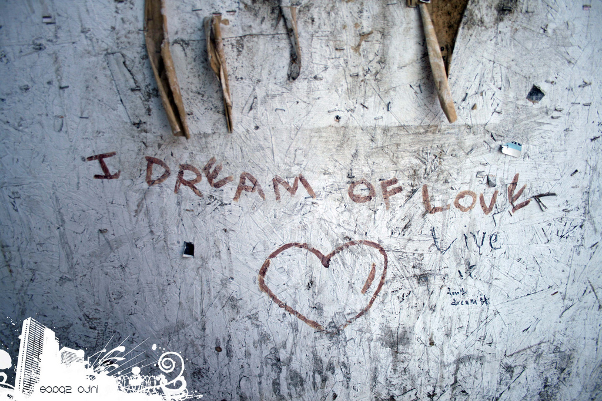

Rüya Dil
Nov 25, 2012 by halit in programlama tagged rüya dil paul graham hackers painters python lispBugün önceden okumaya başladığım ancak son kısmını okumadığım Hackers & Painters kitabını bitirdim. Özellikle en son kısmında yer alan Rüya Dil kısmı, benim kendi favori dilimi bir kez daha sorgulamamı sağladı. Ve farkettim ki Paul Graham sanki direk olarak Python’u anlatıyordu. Kitabın iç kısımlarında Python’u sevdiğini ve saygı duyduğunu birçok kısımda belirtmişti. Ancak daha fazla Lisp dilini savunuyordu. Son kısımdaki maddelerin Python’a işaret etmesi beni şaşırttı.

Kendi yorumlarımı katmadan, aralarından beğendiğim Rüya Dil kriterlerini aşağıya sırayla yazıyorum. Siz de kendi favori dilinizin Rüya Dil kriteriyle uyuşup uyuşmadığını sınayabilirsiniz.
- Açık ve özdür.
- Hızlı başlayan, etkileşimli bir üst düzeyi vardır.
- Yaygın sorunları çok az kod yazarak çözecek programlar üretebilirsiniz.
- Dilin sözdizimi, hatalara meydan veremeyecek şekilde kısadır. Gereksiz bir karakter tuşlamanız veya Shift tuşunu fazlaca kullanmanız dahi gerekmez.
- Gözünüz kapalı, hızlı bir şekilde iç içe döngüler oluşturabilir, hatta gerekirse satır içi bayt kodları bile yazabilirsiniz.
- Dili öğrenebileceğiniz çok sayıda örnek vardır ve dil de onu nasıl kullanacağınızı örneklerden birkaç dakika içerisinde anlayabileceğiniz özelliktedir.
- Dilin küçük bir çekirdeği ve çekirdek dil kadar özenli bir şekilde tasarlanmış, güçlü kitaplıkları bulunur.
- Kitaplıklar birbiriyle gayet uyumlu çalışır; dilin bütün unsurları, hassas bir fotoğraf makinesinin parçaları gibi birbirine uyar.
- İşletim sistemiyle ve diğer dillerle yazılmış uygulamalarla iletişim kurmak kolaydır.
- Sözdizimleri de dahil olmak üzere, dilin her özelliği değiştirilebilir ve önceden tanımlanmış fonksiyonlarla aynı statüye sahiptir. Rüya dilin yalnızca kaynağı değil, aynı zamanda tasarımı da açıktır.
Sanki herşey Python‘a işaret ediyor değil mi? Yoksa ben çok mu önyargılıyım bilmiyorum. Belki Python’dan daha fazla bu kriterlere sahip bir dil vardır ve ben bu dile hala başlama fırsatı bulamamışımdır. (Ruby)
Programlamanın Taosu
Bu aralar ileri seviye sitesinin neredeyse tum yazılarını telefona attım ve surekli okuyorum. Gerçekten Turkçe bu kadar guzel bir kaynak olduğundan hiç haberim yoktu. Bir iki yazıdan sonra yazıların başlıkları bile sizi gelin beni okuyun diye içine çekiyor. Bu yazıların arasında son okuduğum Programlama’nın Taosu gerçekten çok guzel bir ...
read moreGit’e Commit Etmeden Önce Kod Kontrolü
Git sistemi programcılar için gerçekten bulunmaz bir nimet. Hem yazdığınız hemde ilerde yazacağınız kodlar için size birçok olanak sağlıyor. Örneğin çok kullanıcılı bir uygulamaya başlayacaksanız herkes gun içinde yazdığı kodları birbirine mail ile gondermesi artık kabul edilebilir birşey değil. Bunun için versiyon kontrol sistemleri var. Tabi en bilinenleri de git ...
read morePython Yol Haritası
Python ile ilgili çok fazla soru gelen kısımlardan birisi Python’a nasıl başlamalıyım nasıl ilerlemeliyim şeklinde oluyor.Ben de bu soruna kendimin izlediği yolu anlatarak çozum bulmaya çalışacağım.Öncelikle kendinize Python’u oğreneceğinizi şartlamanız gerekiyor.Çunku hiçbirşey zorla yapılmaz.Eğer başlarda en ufak bir heyecan alamıyorsanız bırakın devam etmeyin.Python ...
read moreÜcretsiz Couchdb
Bir onceki yazımda Python ve Django ile CouchDB’yi nasıl kullanacağımızı ana hatlarıyla anlatmıştım.Ancak her zaman olduğu gibi bu tur yazılarda hep localhost’ta denemeler yaparız.İşte bu yuzde her zaman evdeki hesap çarşıya uymaz.Localde yaptıklarınızın kendi serverınızda nasıl çalışacağı hakkında bilgi edinmeniz ve deploy’a hazırlanmanız gerekir ...
read moreTC Kimlik No Algoritması
Algoritma deyince aklıma ilk gelen nedense hep Tc Kimlik No algoritması oluyor.Bunun sebebi en başlarda çok ilginç gelmesi ve başlarda çok fazla ilgilenmem.Çunku bu algoritmayı oğrenince elinize bir kağıt kalem alıp başka kişilerin de Tc Kimlik numaralarının bilinmeyen 2 numarasını bulabiliyorsunuz.Tabi bu algoritma ile sadece kayıp numaralar ...
read moreQt Ve Python Maceralarım
Ramazan dolayısıyla bloguma çok fazla yazı giremediğimin farkındayım.Bi tam başlarda başladığım Arduino tutkusu ile birlikte yazdığım yazılar var.Arduino tutkum tabikide geçmedi hatta daha da arttı diyebilirim.Ancak aklımda olan Arduino ile kullanabileceğim gui programlamarın nasıl yapılacağıydı.Python bana tamamen yeten bir dil olduğu için direk onunla başladım yola ...
read moreTiobe Temmuz Ayı Sıralaması
Python,Ruby,Perl,C,C++ gibi buyuk dillerin belirli tanımlamalara gore sıralanıp her ay Tiobe tarafından yayımlanıyor.Temmuz ayı için olansa son gunlerde yayınlandı.Bu sıralamaya en son baktığımda Java’nın ilk sırada olduğunu hatırlıyordum.Ancak Temmuz ayı sıralamasında yerini C’ye kaptırmış.Belki bu daha once olmuş olabilir ama ...
read morePython İle Mass Mailer
Sitem bir sure kapalı kaldığı için eski takipçilerimin birçoğunu kaybettim.Allahtan hepsinin kayıtlı olduğu bir maillistim vardı.Şimdi sitemi tekrardan açtığıma gore bundan onları haberdar etmek lazımdı.Bu yuzden toplu mail gondermeliydim.Bunu piyasada yapan çok fazla kişi var.Ancak onlarda ciddi rakamlar istiyorlar.Zaten benimde maillistim o kadar buyuk ...
read moreHala Bıkmadınız Mı?
Artık her webmaster sitesinin yeni siteler bolumune girdiğimde gidip sponsor veya sınırsız hosting almış,lamp ve wordpress kullanan kişisel bloglar gormekten bıktım.Biraz orjinal siteler gormek istiyorum.Tabi bazı siteler temaları ile bu farkı koyuyorlar ama diğerlerine ne demeli.Her yerde satılan ucretsiz veya ucretli wp temalarını alıp hemen sitesine ...
read more